8 Chapter 8
#-*- R -*-
# initialization
library(nlme)
library(lattice)
options(width = 65, digits = 5)
options(contrasts = c(unordered = "contr.helmert", ordered = "contr.poly"))
#pdf(file = "ch08.pdf")
# Chapter 8 Fitting Nonlinear Mixed-Effects Models
# 8.1 Fitting Nonlinear Models in S with nls and nlsList
## outer = ~1 is used to display all five curves in one panel
plot(Orange, outer = ~1)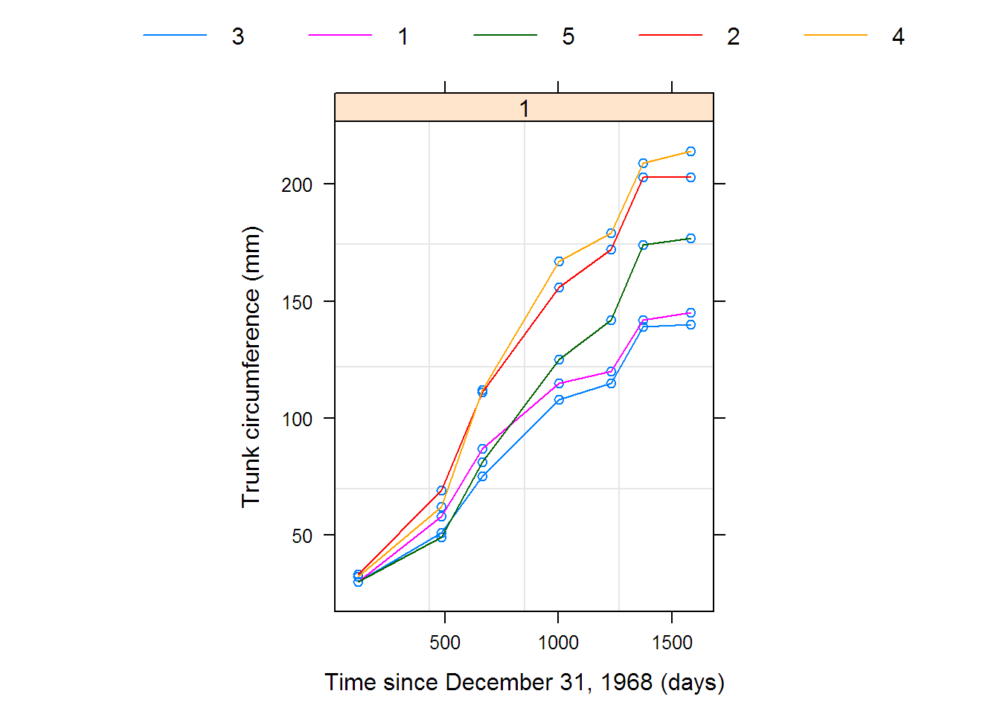
logist <-
function(x, Asym, xmid, scal) Asym/(1 + exp(-(x - xmid)/scal))
logist <- deriv(~Asym/(1+exp(-(x-xmid)/scal)),
c("Asym", "xmid", "scal"), function(x, Asym, xmid, scal){})
Asym <- 180; xmid <- 700; scal <- 300
logist(Orange$age[1:7], Asym, xmid, scal)## [1] 22.617 58.931 84.606 132.061 153.802 162.681 170.962
## attr(,"gradient")
## Asym xmid scal
## [1,] 0.12565 -0.065916 0.127878
## [2,] 0.32739 -0.132124 0.095129
## [3,] 0.47004 -0.149461 0.017935
## [4,] 0.73367 -0.117238 -0.118802
## [5,] 0.85446 -0.074616 -0.132070
## [6,] 0.90378 -0.052175 -0.116872
## [7,] 0.94979 -0.028614 -0.084125fm1Oran.nls <- nls(circumference ~ logist(age, Asym, xmid, scal),
data = Orange, start = c(Asym = 170, xmid = 700, scal = 500))
summary(fm1Oran.nls)##
## Formula: circumference ~ logist(age, Asym, xmid, scal)
##
## Parameters:
## Estimate Std. Error t value Pr(>|t|)
## Asym 192.7 20.2 9.52 7.5e-11 ***
## xmid 728.8 107.3 6.79 1.1e-07 ***
## scal 353.5 81.5 4.34 0.00013 ***
## ---
## Signif. codes: 0 '***' 0.001 '**' 0.01 '*' 0.05 '.' 0.1 ' ' 1
##
## Residual standard error: 23.4 on 32 degrees of freedom
##
## Number of iterations to convergence: 5
## Achieved convergence tolerance: 4.39e-06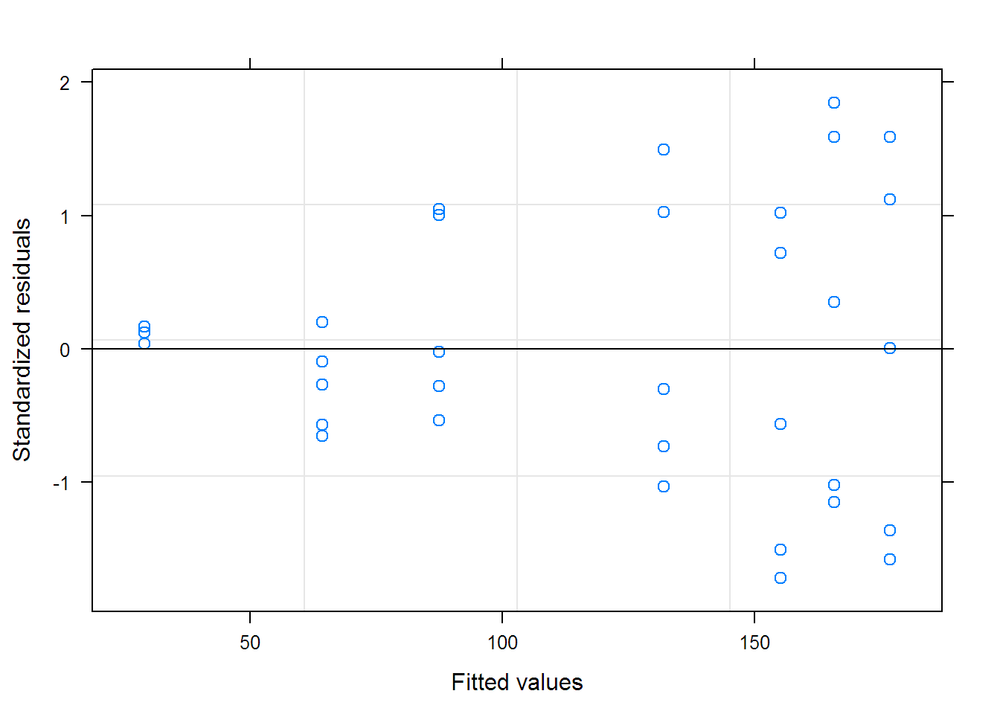
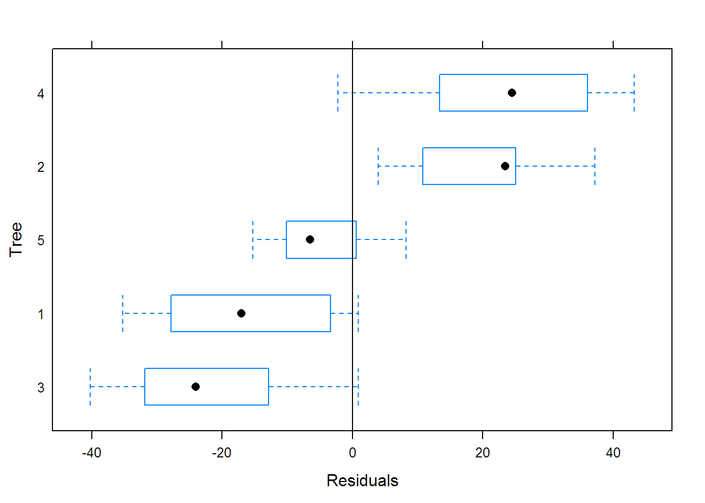
## x y
## 1 118 31.0
## 2 484 57.8
## 3 664 93.2
## 4 1004 134.2
## 5 1231 145.6
## 6 1372 173.4
## 7 1582 175.8## [1] 969.17logistInit <- function(mCall, LHS, data) {
xy <- sortedXyData(mCall[["x"]], LHS, data)
if(nrow(xy) < 3) {
stop("Too few distinct input values to fit a logistic")
}
Asym <- max(abs(xy[,"y"]))
if (Asym != max(xy[,"y"])) Asym <- -Asym # negative asymptote
xmid <- NLSstClosestX(xy, 0.5 * Asym)
scal <- NLSstClosestX(xy, 0.75 * Asym) - xmid
value <- c(Asym, xmid, scal)
names(value) <- mCall[c("Asym", "xmid", "scal")]
value
}
logist <- selfStart(logist, initial = logistInit)
class(logist)## [1] "selfStart"logist <- selfStart(~ Asym/(1 + exp(-(x - xmid)/scal)),
initial = logistInit, parameters = c("Asym", "xmid", "scal"))
getInitial(circumference ~ logist(age, Asym, xmid, scal), Orange)## Asym xmid scal
## 175.80 637.05 347.46## Nonlinear regression model
## model: circumference ~ logist(age, Asym, xmid, scal)
## data: Orange
## Asym xmid scal
## 193 729 354
## residual sum-of-squares: 17480
##
## Number of iterations to convergence: 4
## Achieved convergence tolerance: 8.63e-07## Asym xmid scal
## 192.69 728.76 353.53## Nonlinear regression model
## model: circumference ~ SSlogis(age, Asym, xmid, scal)
## data: Orange
## Asym xmid scal
## 193 729 354
## residual sum-of-squares: 17480
##
## Number of iterations to convergence: 0
## Achieved convergence tolerance: 2.21e-06fm1Oran.lis <-
nlsList(circumference ~ SSlogis(age, Asym, xmid, scal) | Tree,
data = Orange)
fm1Oran.lis <- nlsList(SSlogis, Orange)
fm1Oran.lis.noSS <-
nlsList(circumference ~ Asym/(1+exp(-(age-xmid)/scal)),
data = Orange,
start = c(Asym = 170, xmid = 700, scal = 500))
fm1Oran.lis## Call:
## Model: circumference ~ SSlogis(age, Asym, xmid, scal) | Tree
## Data: Orange
##
## Coefficients:
## Asym xmid scal
## 3 158.83 734.84 400.95
## 1 154.16 627.19 362.57
## 5 207.26 861.30 379.95
## 2 219.00 700.35 332.49
## 4 225.30 710.71 303.14
##
## Degrees of freedom: 35 total; 20 residual
## Residual standard error: 7.98## Call:
## Model: circumference ~ SSlogis(age, Asym, xmid, scal) | Tree
## Data: Orange
##
## Coefficients:
## Asym
## Estimate Std. Error t value Pr(>|t|)
## 3 158.83 19.235 8.2574 0.00046020
## 1 154.16 13.594 11.3404 0.00016902
## 5 207.26 22.023 9.4111 0.00073756
## 2 219.00 13.359 16.3938 0.00010521
## 4 225.30 11.839 19.0299 0.00010404
## xmid
## Estimate Std. Error t value Pr(>|t|)
## 3 734.84 130.807 5.6178 0.00201061
## 1 627.19 92.893 6.7518 0.00126293
## 5 861.30 107.991 7.9757 0.00138949
## 2 700.35 61.350 11.4155 0.00043456
## 4 710.71 51.172 13.8887 0.00035794
## scal
## Estimate Std. Error t value Pr(>|t|)
## 3 400.95 94.776 4.2306 0.0057139
## 1 362.57 81.205 4.4649 0.0058611
## 5 379.95 66.751 5.6920 0.0048740
## 2 332.49 49.385 6.7326 0.0032407
## 4 303.14 41.611 7.2852 0.0041511
##
## Residual standard error: 7.98 on 20 degrees of freedom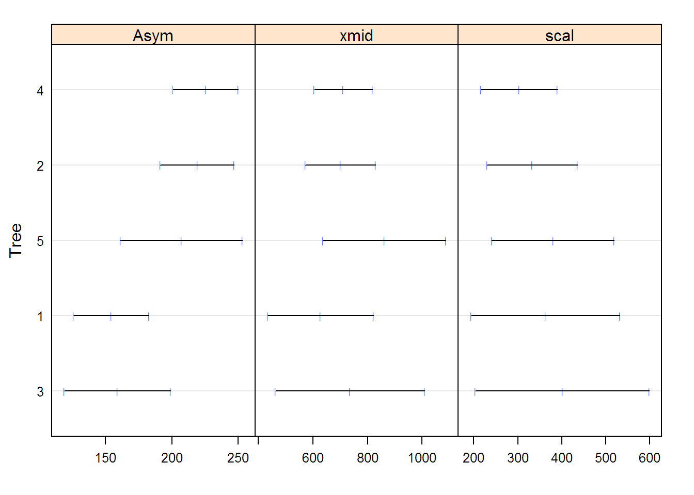
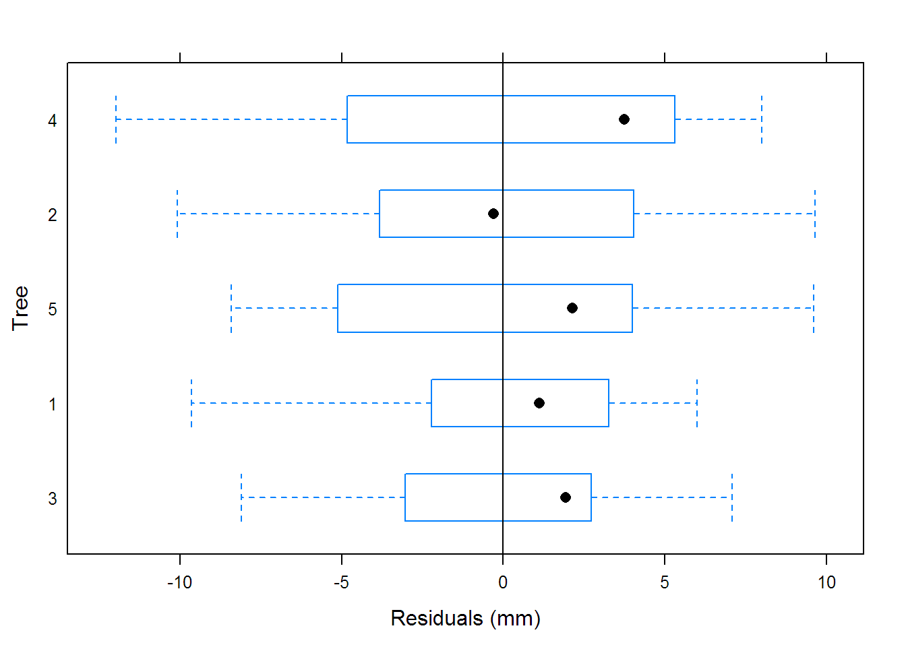
## Grouped Data: conc ~ Time | Subject
## Subject Wt Dose Time conc
## 1 1 79.6 4.02 0.00 0.74
## 2 1 79.6 4.02 0.25 2.84
## 3 1 79.6 4.02 0.57 6.57
## 4 1 79.6 4.02 1.12 10.50## Call:
## Model: conc ~ SSfol(Dose, Time, lKe, lKa, lCl) | Subject
## Data: Theoph
##
## Coefficients:
## lKe lKa lCl
## 6 -2.3073 0.15162 -2.9732
## 7 -2.2804 -0.38605 -2.9643
## 8 -2.3864 0.31883 -3.0691
## 11 -2.3215 1.34782 -2.8604
## 3 -2.5081 0.89754 -3.2300
## 2 -2.2861 0.66406 -3.1063
## 4 -2.4365 0.15826 -3.2861
## 9 -2.4461 2.18219 -3.4208
## 12 -2.2483 -0.18284 -3.1702
## 10 -2.6041 -0.36312 -3.4283
## 1 -2.9196 0.57516 -3.9159
## 5 -2.4255 0.38629 -3.1326
##
## Degrees of freedom: 132 total; 96 residual
## Residual standard error: 0.70019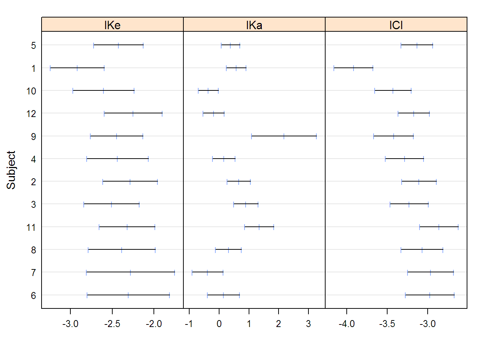
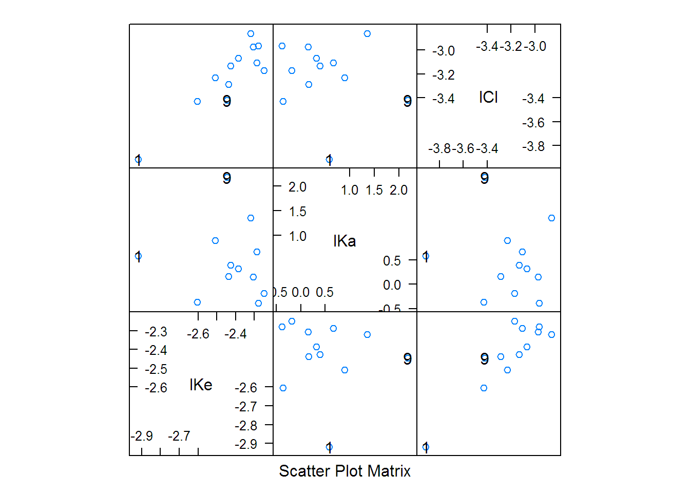
# 8.2 Fitting Nonlinear Mixed-Effects Models with nlme
## no need to specify groups, as Orange is a groupedData object
## random is omitted - by default it is equal to fixed
(fm1Oran.nlme <-
nlme(circumference ~ SSlogis(age, Asym, xmid, scal),
data = Orange,
fixed = Asym + xmid + scal ~ 1,
start = fixef(fm1Oran.lis)))## Warning in nlme.formula(circumference ~ SSlogis(age, Asym, xmid,
## scal), : Iteration 1, LME step: nlminb() did not converge (code =
## 1). Do increase 'msMaxIter'!## Nonlinear mixed-effects model fit by maximum likelihood
## Model: circumference ~ SSlogis(age, Asym, xmid, scal)
## Data: Orange
## Log-likelihood: -129.99
## Fixed: Asym + xmid + scal ~ 1
## Asym xmid scal
## 192.10 727.60 356.61
##
## Random effects:
## Formula: list(Asym ~ 1, xmid ~ 1, scal ~ 1)
## Level: Tree
## Structure: General positive-definite, Log-Cholesky parametrization
## StdDev Corr
## Asym 27.0508 Asym xmid
## xmid 24.2521 -0.328
## scal 36.6009 -0.992 0.443
## Residual 7.3216
##
## Number of Observations: 35
## Number of Groups: 5## Nonlinear mixed-effects model fit by maximum likelihood
## Model: circumference ~ SSlogis(age, Asym, xmid, scal)
## Data: Orange
## AIC BIC logLik
## 279.98 295.53 -129.99
##
## Random effects:
## Formula: list(Asym ~ 1, xmid ~ 1, scal ~ 1)
## Level: Tree
## Structure: General positive-definite, Log-Cholesky parametrization
## StdDev Corr
## Asym 27.0508 Asym xmid
## xmid 24.2521 -0.328
## scal 36.6009 -0.992 0.443
## Residual 7.3216
##
## Fixed effects: Asym + xmid + scal ~ 1
## Value Std.Error DF t-value p-value
## Asym 192.10 14.052 28 13.670 0
## xmid 727.60 34.587 28 21.037 0
## scal 356.61 30.499 28 11.693 0
## Correlation:
## Asym xmid
## xmid 0.277
## scal -0.193 0.665
##
## Standardized Within-Group Residuals:
## Min Q1 Med Q3 Max
## -1.81870 -0.52152 0.17421 0.51768 1.64528
##
## Number of Observations: 35
## Number of Groups: 5##
## Formula: circumference ~ logist(age, Asym, xmid, scal)
##
## Parameters:
## Estimate Std. Error t value Pr(>|t|)
## Asym 192.7 20.2 9.52 7.5e-11 ***
## xmid 728.8 107.3 6.79 1.1e-07 ***
## scal 353.5 81.5 4.34 0.00013 ***
## ---
## Signif. codes: 0 '***' 0.001 '**' 0.01 '*' 0.05 '.' 0.1 ' ' 1
##
## Residual standard error: 23.4 on 32 degrees of freedom
##
## Number of iterations to convergence: 5
## Achieved convergence tolerance: 4.39e-06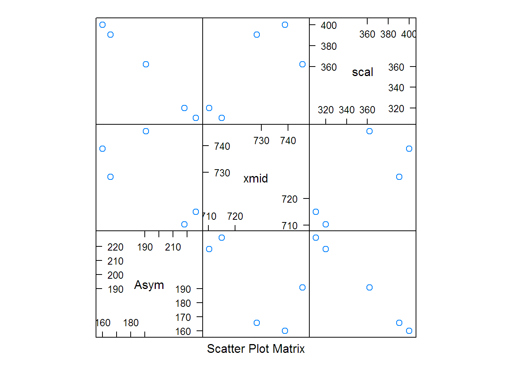
## Model df AIC BIC logLik Test L.Ratio
## fm1Oran.nlme 1 10 279.98 295.54 -129.99
## fm2Oran.nlme 2 5 273.17 280.95 -131.59 1 vs 2 3.1876
## p-value
## fm1Oran.nlme
## fm2Oran.nlme 0.6711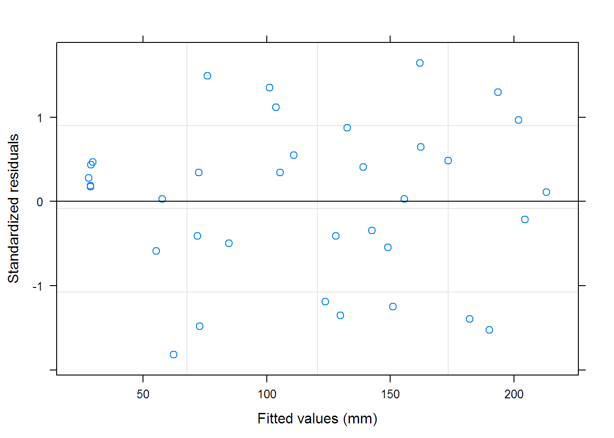
## level = 0:1 requests fixed (0) and within-group (1) predictions
plot(augPred(fm2Oran.nlme, level = 0:1),
layout = c(5,1))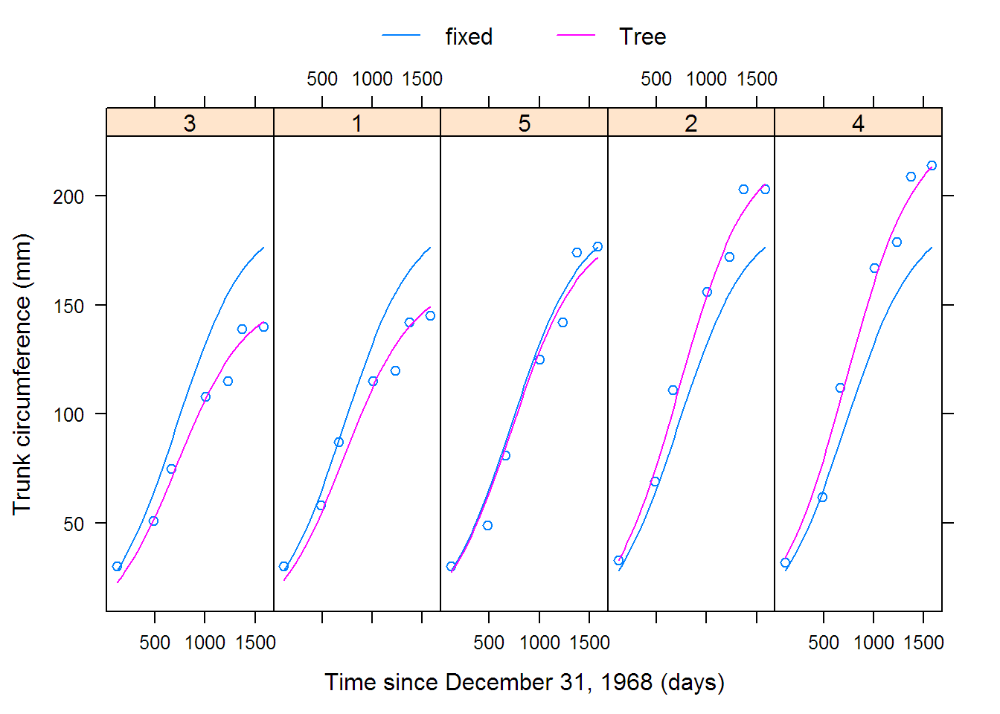
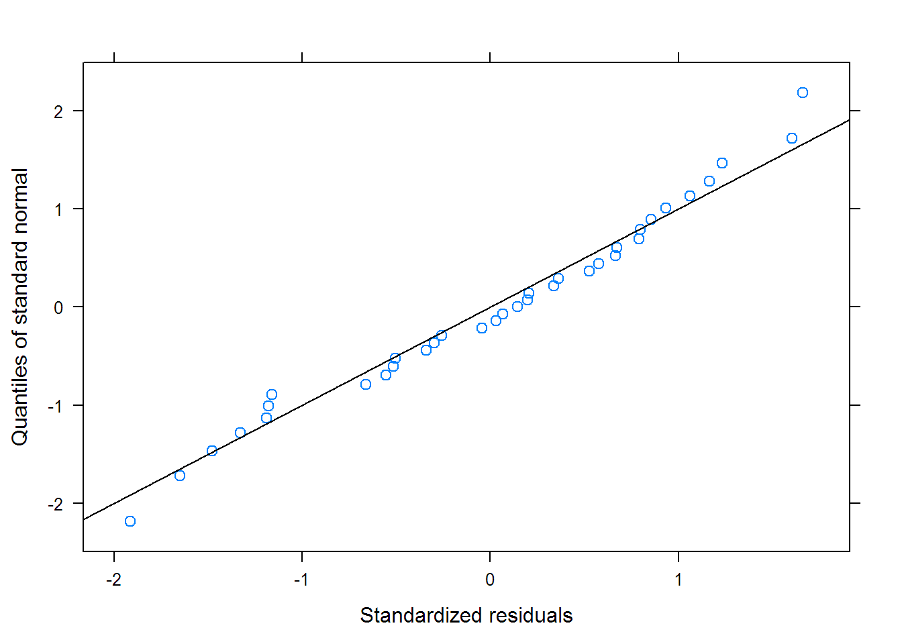
## Warning in (function (model, data = sys.frame(sys.parent()),
## fixed, random, : Iteration 2, LME step: nlminb() did not converge
## (code = 1). Do increase 'msMaxIter'!## Nonlinear mixed-effects model fit by maximum likelihood
## Model: conc ~ SSfol(Dose, Time, lKe, lKa, lCl)
## Data: Theoph
## Log-likelihood: -173.32
## Fixed: list(lKe ~ 1, lKa ~ 1, lCl ~ 1)
## lKe lKa lCl
## -2.43267 0.45141 -3.21445
##
## Random effects:
## Formula: list(lKe ~ 1, lKa ~ 1, lCl ~ 1)
## Level: Subject
## Structure: General positive-definite, Log-Cholesky parametrization
## StdDev Corr
## lKe 0.13104 lKe lKa
## lKa 0.63778 0.012
## lCl 0.25118 0.995 -0.089
## Residual 0.68183
##
## Number of Observations: 132
## Number of Groups: 12if (interactive()) intervals(fm1Theo.nlme, which = "var-cov")
(fm2Theo.nlme <- update(fm1Theo.nlme,
random = pdDiag(lKe + lKa + lCl ~ 1)))## Nonlinear mixed-effects model fit by maximum likelihood
## Model: conc ~ SSfol(Dose, Time, lKe, lKa, lCl)
## Data: Theoph
## Log-likelihood: -177.02
## Fixed: list(lKe ~ 1, lKa ~ 1, lCl ~ 1)
## lKe lKa lCl
## -2.4546 0.4655 -3.2272
##
## Random effects:
## Formula: list(lKe ~ 1, lKa ~ 1, lCl ~ 1)
## Level: Subject
## Structure: Diagonal
## lKe lKa lCl Residual
## StdDev: 1.9302e-05 0.64386 0.16692 0.70923
##
## Number of Observations: 132
## Number of Groups: 12fm3Theo.nlme <-
update(fm2Theo.nlme, random = pdDiag(lKa + lCl ~ 1))
anova(fm1Theo.nlme, fm3Theo.nlme, fm2Theo.nlme)## Model df AIC BIC logLik Test L.Ratio
## fm1Theo.nlme 1 10 366.64 395.47 -173.32
## fm3Theo.nlme 2 6 366.04 383.34 -177.02 1 vs 2 7.4012
## fm2Theo.nlme 3 7 368.05 388.23 -177.02 2 vs 3 0.0041
## p-value
## fm1Theo.nlme
## fm3Theo.nlme 0.1161
## fm2Theo.nlme 0.9488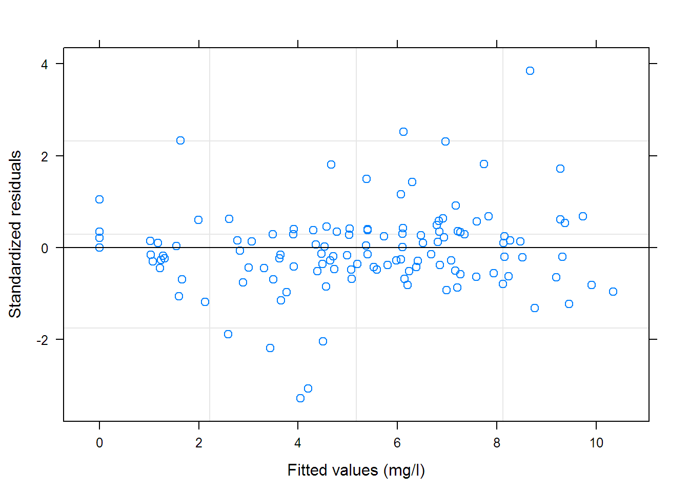
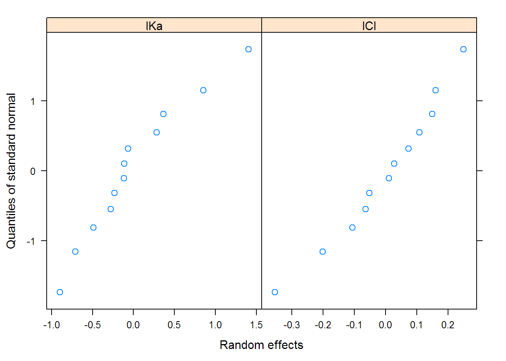
## Grouped Data: uptake ~ conc | Plant
## Plant Type Treatment conc uptake
## 1 Qn1 Quebec nonchilled 95 16.0
## 2 Qn1 Quebec nonchilled 175 30.4
## 3 Qn1 Quebec nonchilled 250 34.8
## 4 Qn1 Quebec nonchilled 350 37.2
## 5 Qn1 Quebec nonchilled 500 35.3
## 6 Qn1 Quebec nonchilled 675 39.2
## 7 Qn1 Quebec nonchilled 1000 39.7
## 8 Qn2 Quebec nonchilled 95 13.6
## 9 Qn2 Quebec nonchilled 175 27.3
## 10 Qn2 Quebec nonchilled 250 37.1
## 11 Qn2 Quebec nonchilled 350 41.8
## 12 Qn2 Quebec nonchilled 500 40.6
## 13 Qn2 Quebec nonchilled 675 41.4
## 14 Qn2 Quebec nonchilled 1000 44.3
## 15 Qn3 Quebec nonchilled 95 16.2
## 16 Qn3 Quebec nonchilled 175 32.4
## 17 Qn3 Quebec nonchilled 250 40.3
## 18 Qn3 Quebec nonchilled 350 42.1
## 19 Qn3 Quebec nonchilled 500 42.9
## 20 Qn3 Quebec nonchilled 675 43.9
## 21 Qn3 Quebec nonchilled 1000 45.5
## 22 Qc1 Quebec chilled 95 14.2
## 23 Qc1 Quebec chilled 175 24.1
## 24 Qc1 Quebec chilled 250 30.3
## 25 Qc1 Quebec chilled 350 34.6
## 26 Qc1 Quebec chilled 500 32.5
## 27 Qc1 Quebec chilled 675 35.4
## 28 Qc1 Quebec chilled 1000 38.7
## 29 Qc2 Quebec chilled 95 9.3
## 30 Qc2 Quebec chilled 175 27.3
## 31 Qc2 Quebec chilled 250 35.0
## 32 Qc2 Quebec chilled 350 38.8
## 33 Qc2 Quebec chilled 500 38.6
## 34 Qc2 Quebec chilled 675 37.5
## 35 Qc2 Quebec chilled 1000 42.4
## 36 Qc3 Quebec chilled 95 15.1
## 37 Qc3 Quebec chilled 175 21.0
## 38 Qc3 Quebec chilled 250 38.1
## 39 Qc3 Quebec chilled 350 34.0
## 40 Qc3 Quebec chilled 500 38.9
## 41 Qc3 Quebec chilled 675 39.6
## 42 Qc3 Quebec chilled 1000 41.4
## 43 Mn1 Mississippi nonchilled 95 10.6
## 44 Mn1 Mississippi nonchilled 175 19.2
## 45 Mn1 Mississippi nonchilled 250 26.2
## 46 Mn1 Mississippi nonchilled 350 30.0
## 47 Mn1 Mississippi nonchilled 500 30.9
## 48 Mn1 Mississippi nonchilled 675 32.4
## 49 Mn1 Mississippi nonchilled 1000 35.5
## 50 Mn2 Mississippi nonchilled 95 12.0
## 51 Mn2 Mississippi nonchilled 175 22.0
## 52 Mn2 Mississippi nonchilled 250 30.6
## 53 Mn2 Mississippi nonchilled 350 31.8
## 54 Mn2 Mississippi nonchilled 500 32.4
## 55 Mn2 Mississippi nonchilled 675 31.1
## 56 Mn2 Mississippi nonchilled 1000 31.5
## 57 Mn3 Mississippi nonchilled 95 11.3
## 58 Mn3 Mississippi nonchilled 175 19.4
## 59 Mn3 Mississippi nonchilled 250 25.8
## 60 Mn3 Mississippi nonchilled 350 27.9
## 61 Mn3 Mississippi nonchilled 500 28.5
## 62 Mn3 Mississippi nonchilled 675 28.1
## 63 Mn3 Mississippi nonchilled 1000 27.8
## 64 Mc1 Mississippi chilled 95 10.5
## 65 Mc1 Mississippi chilled 175 14.9
## 66 Mc1 Mississippi chilled 250 18.1
## 67 Mc1 Mississippi chilled 350 18.9
## 68 Mc1 Mississippi chilled 500 19.5
## 69 Mc1 Mississippi chilled 675 22.2
## 70 Mc1 Mississippi chilled 1000 21.9
## 71 Mc2 Mississippi chilled 95 7.7
## 72 Mc2 Mississippi chilled 175 11.4
## 73 Mc2 Mississippi chilled 250 12.3
## 74 Mc2 Mississippi chilled 350 13.0
## 75 Mc2 Mississippi chilled 500 12.5
## 76 Mc2 Mississippi chilled 675 13.7
## 77 Mc2 Mississippi chilled 1000 14.4
## 78 Mc3 Mississippi chilled 95 10.6
## 79 Mc3 Mississippi chilled 175 18.0
## 80 Mc3 Mississippi chilled 250 17.9
## 81 Mc3 Mississippi chilled 350 17.9
## 82 Mc3 Mississippi chilled 500 17.9
## 83 Mc3 Mississippi chilled 675 18.9
## 84 Mc3 Mississippi chilled 1000 19.9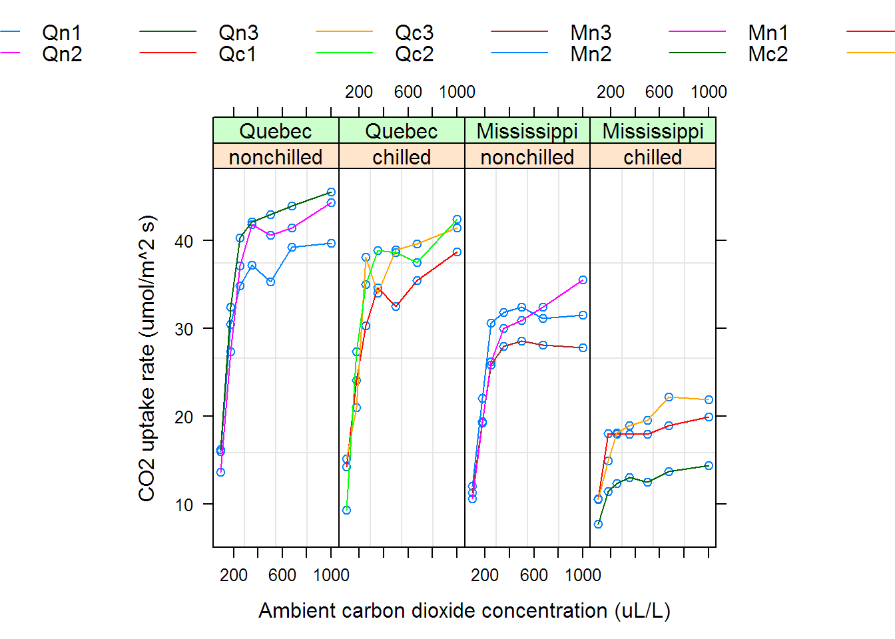
## Call:
## Model: uptake ~ SSasympOff(conc, Asym, lrc, c0) | Plant
## Data: CO2
##
## Coefficients:
## Asym lrc c0
## Qn1 38.140 -4.3806 51.223
## Qn2 42.872 -4.6657 55.858
## Qn3 44.228 -4.4861 54.650
## Qc1 36.429 -4.8617 31.075
## Qc3 40.684 -4.9452 35.089
## Qc2 39.819 -4.4638 72.094
## Mn3 28.483 -4.5916 46.972
## Mn2 32.128 -4.4662 56.039
## Mn1 34.085 -5.0646 36.408
## Mc2 13.555 -4.5609 13.057
## Mc3 18.535 -3.4652 67.849
## Mc1 21.787 -5.1423 -20.400
##
## Degrees of freedom: 84 total; 48 residual
## Residual standard error: 1.7982## Warning in (function (model, data = sys.frame(sys.parent()),
## fixed, random, : Iteration 1, LME step: nlminb() did not converge
## (code = 1). Do increase 'msMaxIter'!## Nonlinear mixed-effects model fit by maximum likelihood
## Model: uptake ~ SSasympOff(conc, Asym, lrc, c0)
## Data: CO2
## Log-likelihood: -201.31
## Fixed: list(Asym ~ 1, lrc ~ 1, c0 ~ 1)
## Asym lrc c0
## 32.4738 -4.6362 43.5461
##
## Random effects:
## Formula: list(Asym ~ 1, lrc ~ 1, c0 ~ 1)
## Level: Plant
## Structure: General positive-definite, Log-Cholesky parametrization
## StdDev Corr
## Asym 9.51051 Asym lrc
## lrc 0.12842 -0.162
## c0 10.37887 1.000 -0.141
## Residual 1.76654
##
## Number of Observations: 84
## Number of Groups: 12## Nonlinear mixed-effects model fit by maximum likelihood
## Model: uptake ~ SSasympOff(conc, Asym, lrc, c0)
## Data: CO2
## Log-likelihood: -202.76
## Fixed: list(Asym ~ 1, lrc ~ 1, c0 ~ 1)
## Asym lrc c0
## 32.4118 -4.5603 49.3436
##
## Random effects:
## Formula: list(Asym ~ 1, lrc ~ 1)
## Level: Plant
## Structure: General positive-definite, Log-Cholesky parametrization
## StdDev Corr
## Asym 9.65939 Asym
## lrc 0.19951 -0.777
## Residual 1.80792
##
## Number of Observations: 84
## Number of Groups: 12## Model df AIC BIC logLik Test L.Ratio
## fm1CO2.nlme 1 10 422.62 446.93 -201.31
## fm2CO2.nlme 2 7 419.52 436.53 -202.76 1 vs 2 2.8955
## p-value
## fm1CO2.nlme
## fm2CO2.nlme 0.408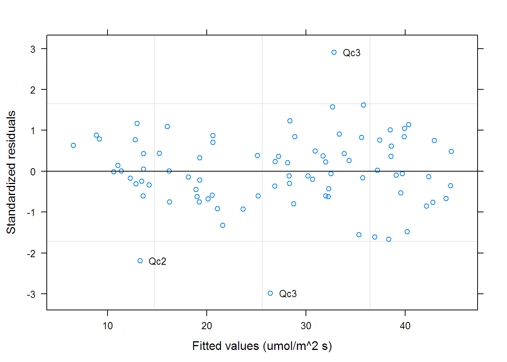
## Asym lrc Type Treatment conc uptake
## Qn1 6.17160 0.0483620 Quebec nonchilled 435 33.229
## Qn2 10.53259 -0.1728430 Quebec nonchilled 435 35.157
## Qn3 12.21809 -0.0579871 Quebec nonchilled 435 37.614
## Qc1 3.35212 -0.0755864 Quebec chilled 435 29.971
## Qc3 7.47431 -0.1924164 Quebec chilled 435 32.586
## Qc2 7.92847 -0.1803236 Quebec chilled 435 32.700
## Mn3 -4.07335 0.0334494 Mississippi nonchilled 435 24.114
## Mn2 -0.14198 0.0056458 Mississippi nonchilled 435 27.343
## Mn1 0.24066 -0.1938592 Mississippi nonchilled 435 26.400
## Mc2 -18.79916 0.3193677 Mississippi chilled 435 12.143
## Mc3 -13.11682 0.2994289 Mississippi chilled 435 17.300
## Mc1 -11.78652 0.1667619 Mississippi chilled 435 18.000## [1] "ranef.lme" "data.frame"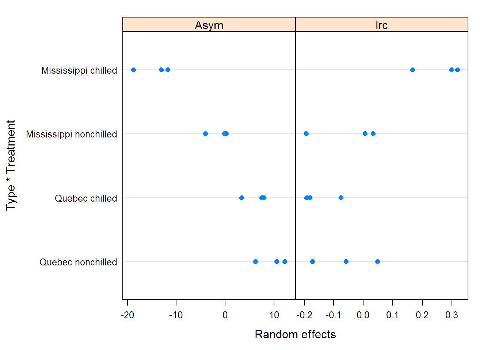
## [,1]
## Quebec -1
## Mississippi 1## [,1]
## nonchilled -1
## chilled 1fm3CO2.nlme <- update(fm2CO2.nlme,
fixed = list(Asym ~ Type * Treatment, lrc + c0 ~ 1),
start = c(32.412, 0, 0, 0, -4.5603, 49.344))
summary(fm3CO2.nlme)## Nonlinear mixed-effects model fit by maximum likelihood
## Model: uptake ~ SSasympOff(conc, Asym, lrc, c0)
## Data: CO2
## AIC BIC logLik
## 393.68 417.98 -186.84
##
## Random effects:
## Formula: list(Asym ~ 1, lrc ~ 1)
## Level: Plant
## Structure: General positive-definite, Log-Cholesky parametrization
## StdDev Corr
## Asym.(Intercept) 2.92989 As.(I)
## lrc 0.16374 -0.906
## Residual 1.84956
##
## Fixed effects: list(Asym ~ Type * Treatment, lrc + c0 ~ 1)
## Value Std.Error DF t-value p-value
## Asym.(Intercept) 32.447 0.9359 67 34.669 0.0000
## Asym.Type1 -7.107 0.5981 67 -11.884 0.0000
## Asym.Treatment1 -3.814 0.5884 67 -6.482 0.0000
## Asym.Type1:Treatment1 -1.195 0.5885 67 -2.031 0.0462
## lrc -4.589 0.0848 67 -54.105 0.0000
## c0 49.482 4.4566 67 11.103 0.0000
## Correlation:
## As.(I) Asym.Ty1 Asym.Tr1 A.T1:T lrc
## Asym.Type1 -0.044
## Asym.Treatment1 -0.021 0.151
## Asym.Type1:Treatment1 -0.023 0.161 0.225
## lrc -0.660 0.202 0.113 0.132
## c0 -0.113 0.060 0.018 0.063 0.653
##
## Standardized Within-Group Residuals:
## Min Q1 Med Q3 Max
## -2.892938 -0.461602 -0.032803 0.520763 2.887703
##
## Number of Observations: 84
## Number of Groups: 12## F-test for: Asym.Type, Asym.Treatment, Asym.Type:Treatment
## numDF denDF F-value p-value
## 1 3 67 54.818 <.0001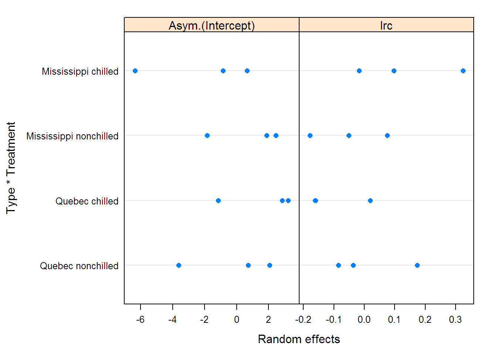
fm3CO2.fix <- fixef(fm3CO2.nlme)
fm4CO2.nlme <- update(fm3CO2.nlme,
fixed = list(Asym + lrc ~ Type * Treatment, c0 ~ 1),
start = c(fm3CO2.fix[1:5], 0, 0, 0, fm3CO2.fix[6]))## Warning in (function (model, data = sys.frame(sys.parent()),
## fixed, random, : Iteration 1, LME step: nlminb() did not converge
## (code = 1). Do increase 'msMaxIter'!## Nonlinear mixed-effects model fit by maximum likelihood
## Model: uptake ~ SSasympOff(conc, Asym, lrc, c0)
## Data: CO2
## AIC BIC logLik
## 388.42 420.02 -181.21
##
## Random effects:
## Formula: list(Asym ~ 1, lrc ~ 1)
## Level: Plant
## Structure: General positive-definite, Log-Cholesky parametrization
## StdDev Corr
## Asym.(Intercept) 2.349584 As.(I)
## lrc.(Intercept) 0.079545 -0.92
## Residual 1.792030
##
## Fixed effects: list(Asym + lrc ~ Type * Treatment, c0 ~ 1)
## Value Std.Error DF t-value p-value
## Asym.(Intercept) 32.342 0.7848 64 41.209 0.0000
## Asym.Type1 -7.990 0.7785 64 -10.264 0.0000
## Asym.Treatment1 -4.210 0.7781 64 -5.410 0.0000
## Asym.Type1:Treatment1 -2.725 0.7780 64 -3.502 0.0008
## lrc.(Intercept) -4.509 0.0809 64 -55.745 0.0000
## lrc.Type1 0.133 0.0552 64 2.417 0.0185
## lrc.Treatment1 0.100 0.0551 64 1.812 0.0746
## lrc.Type1:Treatment1 0.185 0.0554 64 3.345 0.0014
## c0 50.513 4.3647 64 11.573 0.0000
## Correlation:
## As.(I) Asym.Ty1 Asym.Tr1 A.T1:T lr.(I)
## Asym.Type1 -0.017
## Asym.Treatment1 -0.010 -0.017
## Asym.Type1:Treatment1 -0.020 -0.006 -0.011
## lrc.(Intercept) -0.471 0.004 0.001 0.009
## lrc.Type1 -0.048 -0.548 -0.005 -0.018 0.402
## lrc.Treatment1 -0.031 -0.004 -0.551 -0.033 0.322
## lrc.Type1:Treatment1 -0.026 -0.015 -0.032 -0.547 0.351
## c0 -0.133 0.038 0.020 0.019 0.735
## lrc.Ty1 lrc.Tr1 l.T1:T
## Asym.Type1
## Asym.Treatment1
## Asym.Type1:Treatment1
## lrc.(Intercept)
## lrc.Type1
## lrc.Treatment1 0.375
## lrc.Type1:Treatment1 0.395 0.487
## c0 0.104 0.083 0.140
##
## Standardized Within-Group Residuals:
## Min Q1 Med Q3 Max
## -2.862148 -0.494306 -0.042384 0.566220 3.040308
##
## Number of Observations: 84
## Number of Groups: 12## Model df AIC BIC logLik Test L.Ratio
## fm4CO2.nlme 1 13 388.42 420.02 -181.21
## fm5CO2.nlme 2 11 387.06 413.79 -182.53 1 vs 2 2.6367
## p-value
## fm4CO2.nlme
## fm5CO2.nlme 0.2676CO2$type <- 2 * (as.integer(CO2$Type) - 1.5)
CO2$treatment <- 2 * (as.integer(CO2$Treatment) - 1.5)
fm1CO2.nls <- nls(uptake ~ SSasympOff(conc, Asym.Intercept +
Asym.Type * type + Asym.Treatment * treatment +
Asym.TypeTreatment * type * treatment, lrc.Intercept +
lrc.Type * type + lrc.Treatment * treatment +
lrc.TypeTreatment * type * treatment, c0), data = CO2,
start = c(Asym.Intercept = 32.371, Asym.Type = -8.0086,
Asym.Treatment = -4.2001, Asym.TypeTreatment = -2.7253,
lrc.Intercept = -4.5267, lrc.Type = 0.13112,
lrc.Treatment = 0.093928, lrc.TypeTreatment = 0.17941,
c0 = 50.126))
anova(fm5CO2.nlme, fm1CO2.nls)## Model df AIC BIC logLik Test L.Ratio
## fm5CO2.nlme 1 11 387.06 413.79 -182.53
## fm1CO2.nls 2 10 418.34 442.65 -199.17 1 vs 2 33.289
## p-value
## fm5CO2.nlme
## fm1CO2.nls <.0001# plot(augPred(fm5CO2.nlme, level = 0:1), ## FIXME: problem with levels
# layout = c(6,2)) ## Actually a problem with contrasts.
## This fit just ping-pongs.
#fm1Quin.nlme <-
# nlme(conc ~ quinModel(Subject, time, conc, dose, interval,
# lV, lKa, lCl),
# data = Quinidine, fixed = lV + lKa + lCl ~ 1,
# random = pdDiag(lV + lCl ~ 1), groups = ~ Subject,
# start = list(fixed = c(5, -0.3, 2)),
# na.action = NULL, naPattern = ~ !is.na(conc), verbose = TRUE)
#fm1Quin.nlme
#fm1Quin.nlmeRE <- ranef(fm1Quin.nlme, aug = TRUE)
#fm1Quin.nlmeRE[1:3,]
# plot(fm1Quin.nlmeRE, form = lCl ~ Age + Smoke + Ethanol + ## FIXME: problem in max
# Weight + Race + Height + glyco + Creatinine + Heart,
# control = list(cex.axis = 0.7))
#fm1Quin.fix <- fixef(fm1Quin.nlme)
#fm2Quin.nlme <- update(fm1Quin.nlme,
# fixed = list(lCl ~ glyco, lKa + lV ~ 1),
# start = c(fm1Quin.fix[3], 0, fm1Quin.fix[2:1]))
fm2Quin.nlme <-
nlme(conc ~ quinModel(Subject, time, conc, dose, interval,
lV, lKa, lCl),
data = Quinidine, fixed = list(lCl ~ glyco, lV + lKa ~ 1),
random = pdDiag(diag(c(0.3,0.3)), form = lV + lCl ~ 1),
groups = ~ Subject,
start = list(fixed = c(2.5, 0, 5.4, -0.2)),
na.action = NULL, naPattern = ~ !is.na(conc))
summary(fm2Quin.nlme) # wrong values## Nonlinear mixed-effects model fit by maximum likelihood
## Model: conc ~ quinModel(Subject, time, conc, dose, interval, lV, lKa, lCl)
## Data: Quinidine
## AIC BIC logLik
## 892.07 919.29 -439.04
##
## Random effects:
## Formula: list(lV ~ 1, lCl ~ 1)
## Level: Subject
## Structure: Diagonal
## lV lCl.(Intercept) Residual
## StdDev: 0.0002627 0.27109 0.65106
##
## Fixed effects: list(lCl ~ glyco, lV + lKa ~ 1)
## Value Std.Error DF t-value p-value
## lCl.(Intercept) 3.1248 0.065491 222 47.714 0.000
## lCl.glyco -0.5015 0.042816 222 -11.714 0.000
## lV 5.2721 0.094795 222 55.616 0.000
## lKa -0.8436 0.303914 222 -2.776 0.006
## Correlation:
## lC.(I) lCl.gl lV
## lCl.glyco -0.880
## lV -0.072 0.027
## lKa -0.272 0.149 0.538
##
## Standardized Within-Group Residuals:
## Min Q1 Med Q3 Max
## -2.54585 -0.53423 -0.02214 0.50534 3.50158
##
## Number of Observations: 361
## Number of Groups: 136options(contrasts = c("contr.treatment", "contr.poly"))
fm2Quin.fix <- fixef(fm2Quin.nlme)
## subsequent fits don't work
#fm3Quin.nlme <- update(fm2Quin.nlme,
# fixed = list(lCl ~ glyco + Creatinine, lKa + lV ~ 1),
# start = c(fm2Quin.fix[1:2], 0.2, fm2Quin.fix[3:4]))
#summary(fm3Quin.nlme)
#fm3Quin.fix <- fixef(fm3Quin.nlme)
#fm4Quin.nlme <- update(fm3Quin.nlme,
# fixed = list(lCl ~ glyco + Creatinine + Weight, lKa + lV ~ 1),
# start = c(fm3Quin.fix[1:3], 0, fm3Quin.fix[4:5]))
#summary(fm4Quin.nlme)
## This fit just ping-pongs
##fm1Wafer.nlmeR <-
## nlme(current ~ A + B * cos(4.5679 * voltage) +
## C * sin(4.5679 * voltage), data = Wafer,
## fixed = list(A ~ voltage + I(voltage^2), B + C ~ 1),
## random = list(Wafer = A ~ voltage + I(voltage^2),
## Site = pdBlocked(list(A~1, A~voltage+I(voltage^2)-1))),
### start = fixef(fm4Wafer), method = "REML", control = list(tolerance=1e-2))
## start = c(-4.255, 5.622, 1.258, -0.09555, 0.10434),
## method = "REML", control = list(tolerance = 1e-2))
##fm1Wafer.nlmeR
##fm1Wafer.nlme <- update(fm1Wafer.nlmeR, method = "ML")
(fm2Wafer.nlme <-
nlme(current ~ A + B * cos(w * voltage + pi/4),
data = Wafer,
fixed = list(A ~ voltage + I(voltage^2), B + w ~ 1),
random = list(Wafer = pdDiag(list(A ~ voltage + I(voltage^2), B + w ~ 1)),
Site = pdDiag(list(A ~ voltage+I(voltage^2), B ~ 1))),
start = c(-4.255, 5.622, 1.258, -0.09555, 4.5679)))## Nonlinear mixed-effects model fit by maximum likelihood
## Model: current ~ A + B * cos(w * voltage + pi/4)
## Data: Wafer
## Log-likelihood: 662.75
## Fixed: list(A ~ voltage + I(voltage^2), B + w ~ 1)
## A.(Intercept) A.voltage A.I(voltage^2) B
## -4.26538 5.63310 1.25595 -0.14064
## w
## 4.59331
##
## Random effects:
## Formula: list(A ~ voltage + I(voltage^2), B ~ 1, w ~ 1)
## Level: Wafer
## Structure: Diagonal
## A.(Intercept) A.voltage A.I(voltage^2) B
## StdDev: 0.12699 0.33706 0.04883 0.0050593
## w
## StdDev: 5.4811e-05
##
## Formula: list(A ~ voltage + I(voltage^2), B ~ 1)
## Level: Site %in% Wafer
## Structure: Diagonal
## A.(Intercept) A.voltage A.I(voltage^2) B
## StdDev: 0.061831 0.26875 0.055905 4.4861e-06
## Residual
## StdDev: 0.0078558
##
## Number of Observations: 400
## Number of Groups:
## Wafer Site %in% Wafer
## 10 80plot(fm2Wafer.nlme, resid(.) ~ voltage | Wafer,
panel = function(x, y, ...) {
panel.grid()
panel.xyplot(x, y)
panel.loess(x, y, lty = 2)
panel.abline(0, 0)
})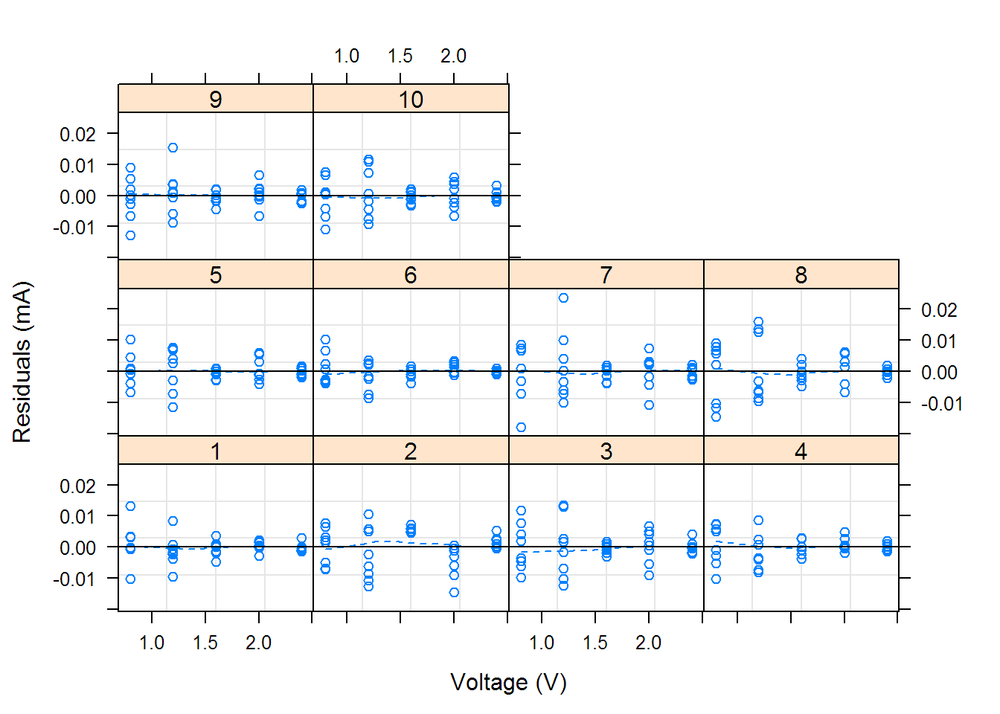
## anova(fm1Wafer.nlme, fm2Wafer.nlme, test = FALSE)
# intervals(fm2Wafer.nlme)
# 8.3 Extending the Basic nlme Model
#fm4Theo.nlme <- update(fm3Theo.nlme,
# weights = varConstPower(power = 0.1))
# this fit is way off
#fm4Theo.nlme
#anova(fm3Theo.nlme, fm4Theo.nlme)
#plot(fm4Theo.nlme)
## xlim used to hide an unusually high fitted value and enhance
## visualization of the heteroscedastic pattern
# plot(fm4Quin.nlme, xlim = c(0, 6.2))
#fm5Quin.nlme <- update(fm4Quin.nlme, weights = varPower())
#summary(fm5Quin.nlme)
#anova(fm4Quin.nlme, fm5Quin.nlme)
#plot(fm5Quin.nlme, xlim = c(0, 6.2))
var.nlme <- nlme(follicles ~ A + B * sin(2 * pi * w * Time) +
C * cos(2 * pi * w *Time), data = Ovary,
fixed = A + B + C + w ~ 1, random = pdDiag(A + B + w ~ 1),
# start = c(fixef(fm5Ovar.lme), 1))
start = c(12.18, -3.298, -0.862, 1))
##fm1Ovar.nlme
##ACF(fm1Ovar.nlme)
##plot(ACF(fm1Ovar.nlme, maxLag = 10), alpha = 0.05)
##fm2Ovar.nlme <- update(fm1Ovar.nlme, correlation = corAR1(0.311))
##fm3Ovar.nlme <- update(fm1Ovar.nlme, correlation = corARMA(p=0, q=2))
##anova(fm2Ovar.nlme, fm3Ovar.nlme, test = FALSE)
##intervals(fm2Ovar.nlme)
##fm4Ovar.nlme <- update(fm2Ovar.nlme, random = A ~ 1)
##anova(fm2Ovar.nlme, fm4Ovar.nlme)
##if (interactive()) fm5Ovar.nlme <- update(fm4Ovar.nlme, correlation = corARMA(p=1, q=1))
# anova(fm4Ovar.nlme, fm5Ovar.nlme)
# plot(ACF(fm5Ovar.nlme, maxLag = 10, resType = "n"),
# alpha = 0.05)
# fm5Ovar.lmeML <- update(fm5Ovar.lme, method = "ML")
# intervals(fm5Ovar.lmeML)
# fm6Ovar.lmeML <- update(fm5Ovar.lmeML, random = ~1)
# anova(fm5Ovar.lmeML, fm6Ovar.lmeML)
# anova(fm6Ovar.lmeML, fm5Ovar.nlme)
# intervals(fm5Ovar.nlme, which = "fixed")
fm1Dial.lis <-
nlsList(rate ~ SSasympOff(pressure, Asym, lrc, c0) | QB,
data = Dialyzer)
fm1Dial.lis## Call:
## Model: rate ~ SSasympOff(pressure, Asym, lrc, c0) | QB
## Data: Dialyzer
##
## Coefficients:
## Asym lrc c0
## 200 44.989 0.76486 0.22424
## 300 62.217 0.25282 0.22484
##
## Degrees of freedom: 140 total; 134 residual
## Residual standard error: 3.8043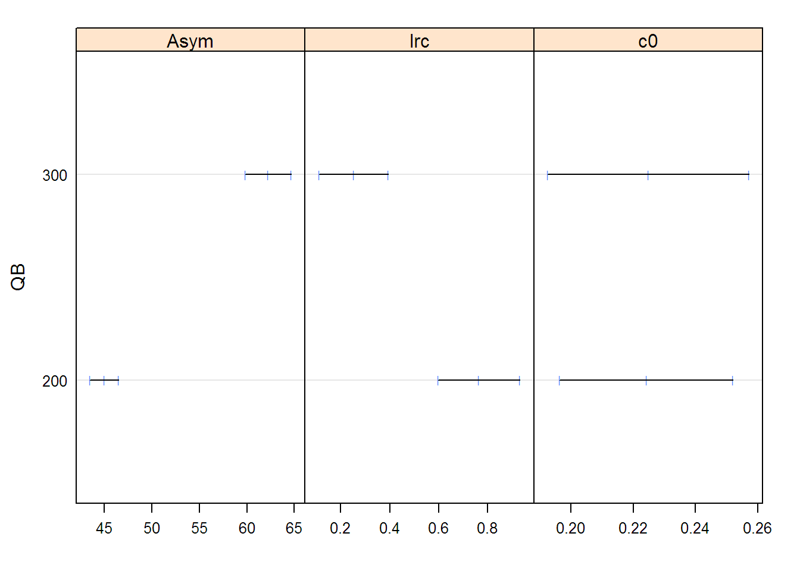
fm1Dial.gnls <- gnls(rate ~ SSasympOff(pressure, Asym, lrc, c0),
data = Dialyzer, params = list(Asym + lrc ~ QB, c0 ~ 1),
start = c(53.6, 8.6, 0.51, -0.26, 0.225))
fm1Dial.gnls## Generalized nonlinear least squares fit
## Model: rate ~ SSasympOff(pressure, Asym, lrc, c0)
## Data: Dialyzer
## Log-likelihood: -382.65
##
## Coefficients:
## Asym.(Intercept) Asym.QB300 lrc.(Intercept)
## 44.98645 17.24009 0.76558
## lrc.QB300 c0
## -0.51368 0.22449
##
## Degrees of freedom: 140 total; 135 residual
## Residual standard error: 3.7902Dialyzer$QBcontr <- 2 * (Dialyzer$QB == 300) - 1
fm1Dial.nls <-
nls(rate ~ SSasympOff(pressure, Asym.Int + Asym.QB * QBcontr,
lrc.Int + lrc.QB * QBcontr, c0), data = Dialyzer,
start = c(Asym.Int = 53.6, Asym.QB = 8.6, lrc.Int = 0.51,
lrc.QB = -0.26, c0 = 0.225))
summary(fm1Dial.nls)##
## Formula: rate ~ SSasympOff(pressure, Asym.Int + Asym.QB * QBcontr, lrc.Int +
## lrc.QB * QBcontr, c0)
##
## Parameters:
## Estimate Std. Error t value Pr(>|t|)
## Asym.Int 53.6065 0.7054 75.99 < 2e-16 ***
## Asym.QB 8.6201 0.6792 12.69 < 2e-16 ***
## lrc.Int 0.5087 0.0552 9.21 5.5e-16 ***
## lrc.QB -0.2568 0.0450 -5.70 7.0e-08 ***
## c0 0.2245 0.0106 21.13 < 2e-16 ***
## ---
## Signif. codes: 0 '***' 0.001 '**' 0.01 '*' 0.05 '.' 0.1 ' ' 1
##
## Residual standard error: 3.79 on 135 degrees of freedom
##
## Number of iterations to convergence: 4
## Achieved convergence tolerance: 7.26e-06## 'log Lik.' -382.65 (df=6)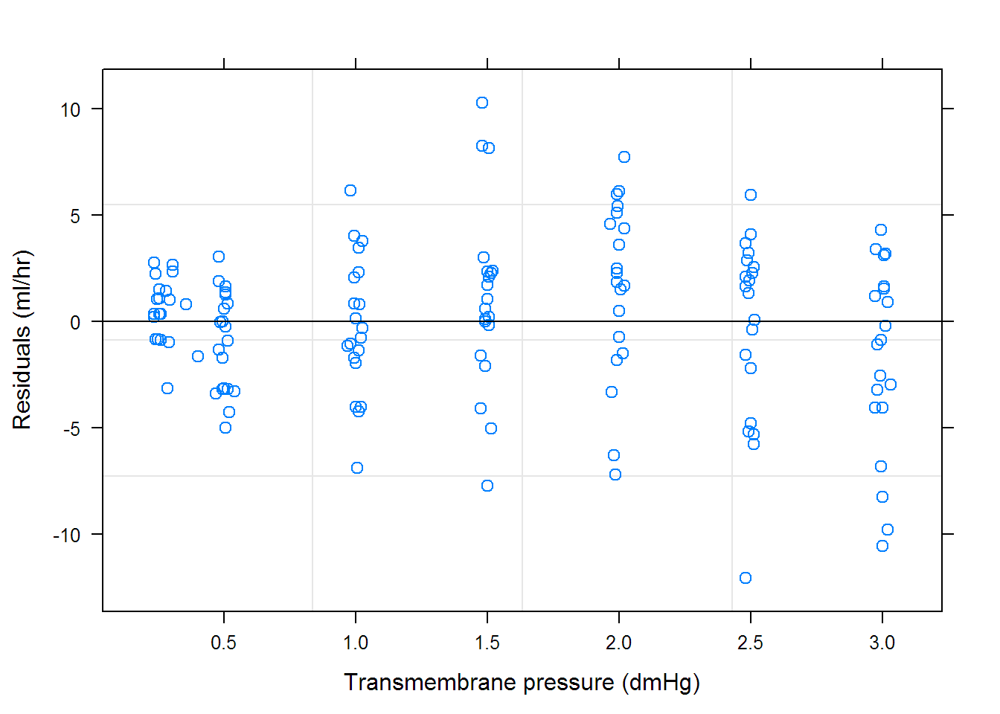
fm2Dial.gnls <- update(fm1Dial.gnls,
weights = varPower(form = ~ pressure))
anova(fm1Dial.gnls, fm2Dial.gnls)## Model df AIC BIC logLik Test L.Ratio
## fm1Dial.gnls 1 6 777.29 794.94 -382.65
## fm2Dial.gnls 2 7 748.47 769.07 -367.24 1 vs 2 30.815
## p-value
## fm1Dial.gnls
## fm2Dial.gnls <.0001## lag ACF
## 1 0 1.0000000
## 2 1 0.7156705
## 3 2 0.5045422
## 4 3 0.2948121
## 5 4 0.2097493
## 6 5 0.1385694
## 7 6 -0.0020188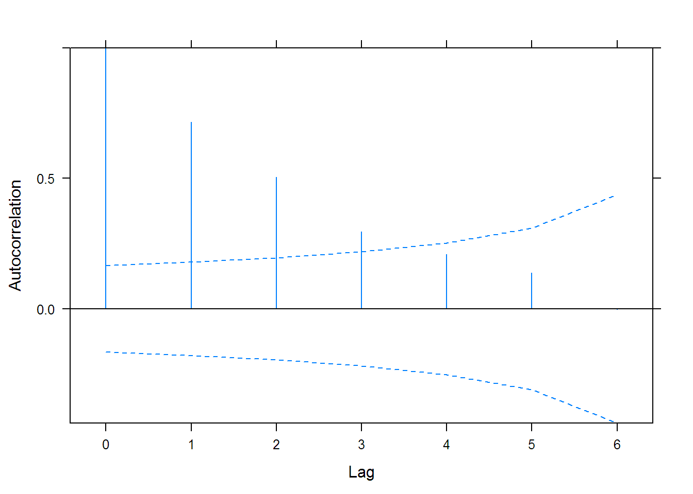
## Generalized nonlinear least squares fit
## Model: rate ~ SSasympOff(pressure, Asym, lrc, c0)
## Data: Dialyzer
## Log-likelihood: -322.52
##
## Coefficients:
## Asym.(Intercept) Asym.QB300 lrc.(Intercept)
## 46.91103 16.39980 0.54166
## lrc.QB300 c0
## -0.33947 0.21478
##
## Correlation Structure: AR(1)
## Formula: ~1 | Subject
## Parameter estimate(s):
## Phi
## 0.74441
## Variance function:
## Structure: Power of variance covariate
## Formula: ~pressure
## Parameter estimates:
## power
## 0.57232
## Degrees of freedom: 140 total; 135 residual
## Residual standard error: 3.1845## Approximate 95% confidence intervals
##
## Coefficients:
## lower est. upper
## Asym.(Intercept) 43.87664 46.91103 49.94542
## Asym.QB300 11.63269 16.39980 21.16690
## lrc.(Intercept) 0.43527 0.54166 0.64806
## lrc.QB300 -0.48743 -0.33947 -0.19151
## c0 0.20637 0.21478 0.22318
## attr(,"label")
## [1] "Coefficients:"
##
## Correlation structure:
## lower est. upper
## Phi 0.62176 0.74441 0.83143
## attr(,"label")
## [1] "Correlation structure:"
##
## Variance function:
## lower est. upper
## power 0.44262 0.57232 0.70201
## attr(,"label")
## [1] "Variance function:"
##
## Residual standard error:
## lower est. upper
## 2.5923 3.1271 3.7722## Model df AIC BIC logLik Test L.Ratio
## fm2Dial.gnls 1 7 748.47 769.07 -367.24
## fm3Dial.gnls 2 8 661.04 684.58 -322.52 1 vs 2 89.433
## p-value
## fm2Dial.gnls
## fm3Dial.gnls <.0001# restore two fitted models
fm2Dial.lme <-
lme(rate ~(pressure + I(pressure^2) + I(pressure^3) + I(pressure^4))*QB,
Dialyzer, ~ pressure + I(pressure^2),
weights = varPower(form = ~ pressure))
fm2Dial.lmeML <- update(fm2Dial.lme, method = "ML")
fm3Dial.gls <-
gls(rate ~(pressure + I(pressure^2) + I(pressure^3) + I(pressure^4))*QB,
Dialyzer, weights = varPower(form = ~ pressure),
corr = corAR1(0.771, form = ~ 1 | Subject))
fm3Dial.glsML <- update(fm3Dial.gls, method = "ML")
anova( fm2Dial.lmeML, fm3Dial.glsML, fm3Dial.gnls, test = FALSE)## Model df AIC BIC logLik
## fm2Dial.lmeML 1 18 651.75 704.70 -307.87
## fm3Dial.glsML 2 13 647.56 685.80 -310.78
## fm3Dial.gnls 3 8 661.04 684.58 -322.52## user system elapsed
## 92.85 3.21 102.41